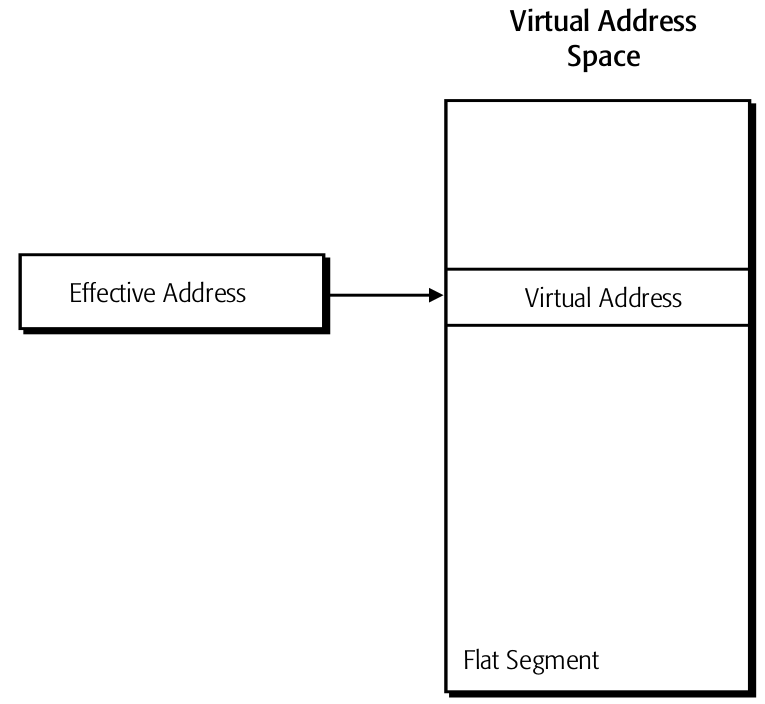
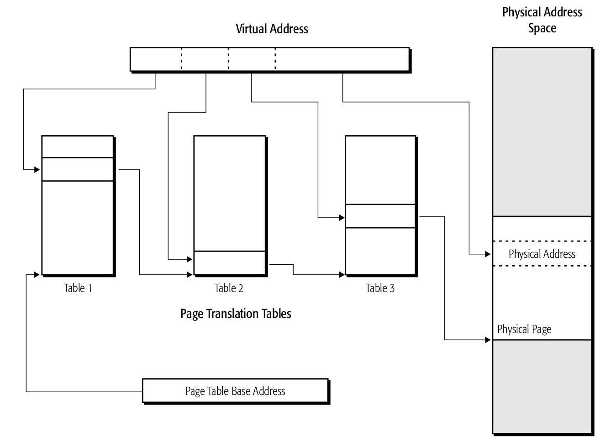
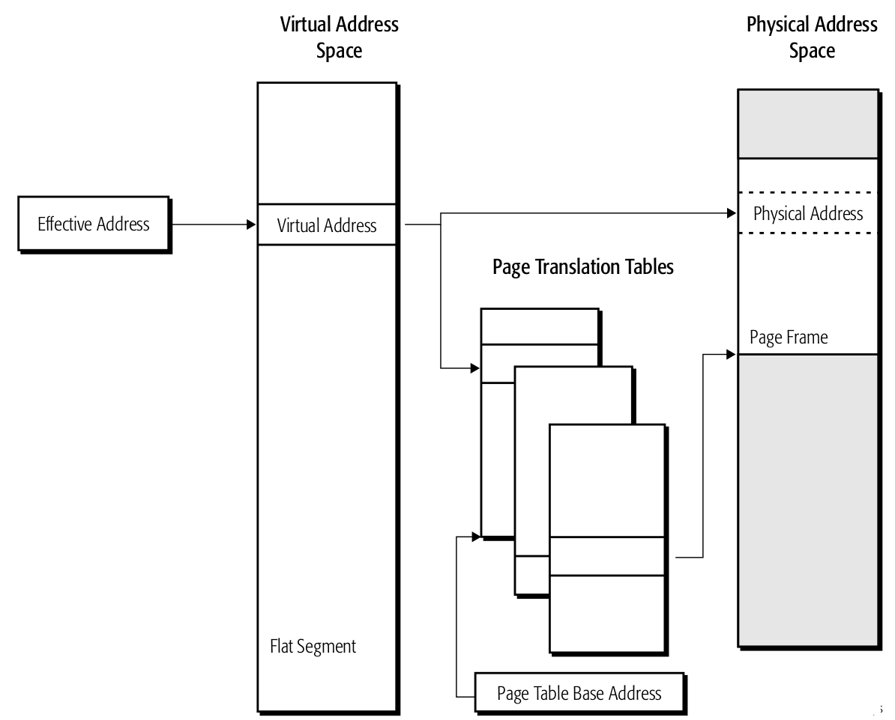
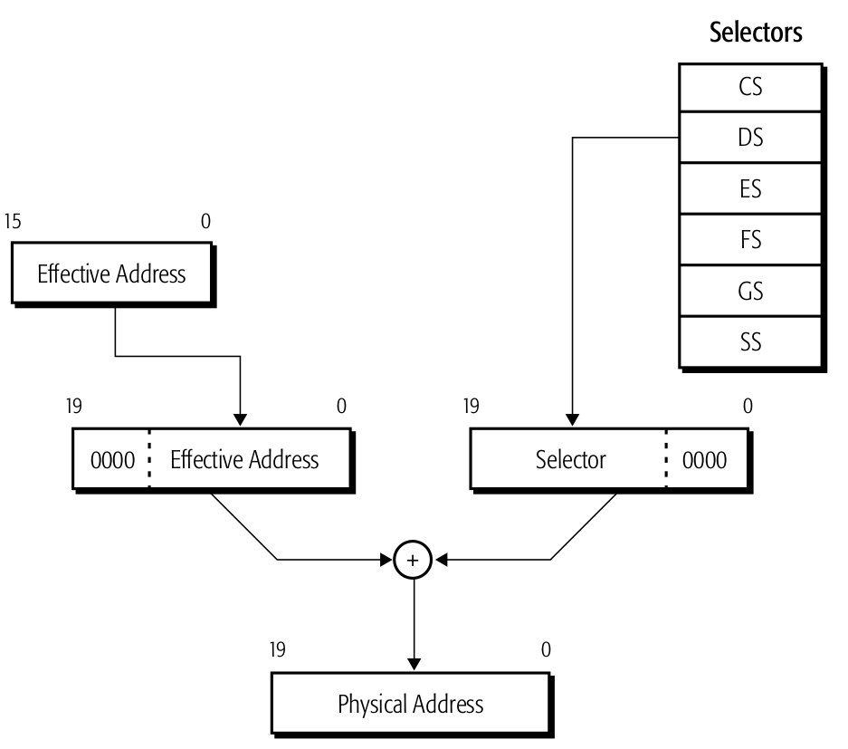
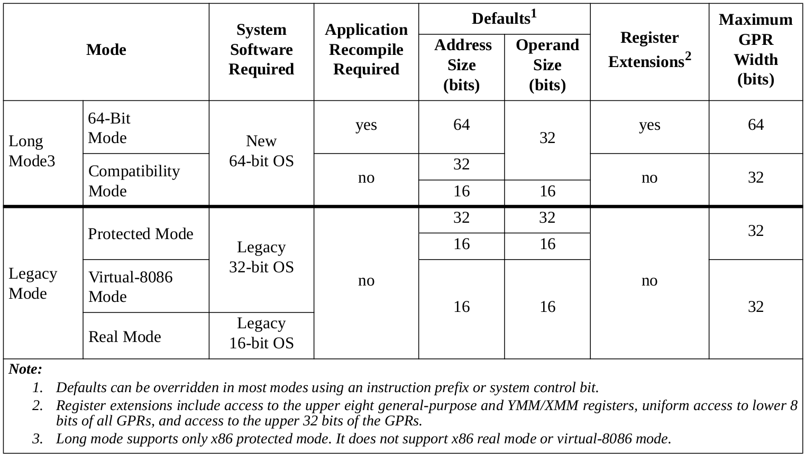
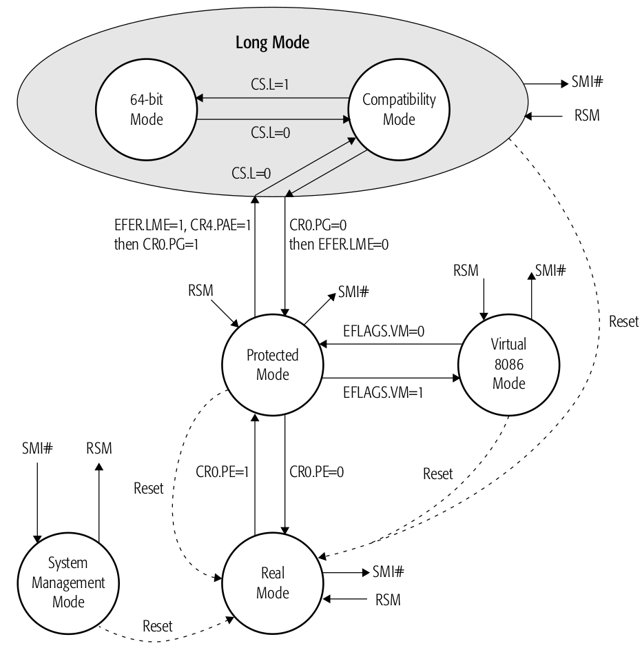

系统编程概要
Table of Contents
本系列文章是为系统软件开发者准备的，系统软件开发者是指编写操作系统、加载器、链接器、设备驱动或者其它请求访问系统资源的程序。这些系统资源通常只能提供给具有最高权限级的软件（CPL=0），权限以及它们的交互在后面的系列文章介绍。
本章主要介绍AMD64架构提供给系统软件开发者的基本功能，这些概念包括：
- 支持的地址形式以及内存是怎样组织的。
- 内存管理硬件是怎样利用各种形式的地址去访问内存。
- 处理器操作模式，以及内存管理是怎样支持这些模式的。
- 用来管理系统资源的系统控制器。
- 中断与异常机制，以及它们是怎样打断程序的执行从而报告错误。
- 此外，一些其它的功能也会提供给系统软件，包括硬件多任务的支持，报告Machine-check异常，调试软件以及优化程序性能。
为了支持64-bit的操作系统和应用，许多遗留下来的功能或特点都有被加强，但同时也向后兼容已经存在的软件。
1 内存模型
ADM64架构的内存模型被设计成系统软件可以以安全的方式去管理应用软件以及相关的数据，它可以和旧版的内存模型兼容。对于虚拟地址和物理地址之间的转换由硬件机制完成。硬件的翻译机制允许系统软件以透明的方式重定位应用和数据，可以定位到物理内存空间或者是硬盘空间，这些空间都是由系统软件管理的。
在long mode模式下，AMD64架构实现的是平坦(flat)内存模型。
1.1 内存寻址
AMD64架构支持地址重定位，为了做到这点，几种类型的地址被定义用来完整的描述内存组织，共计四种：
- 逻辑地址
- 有效地址，或者叫段偏移，是逻辑地址的一部分。
- 线性（虚拟）地址
- 物理地址
逻辑地址 一个引用可以到段地址空间。它由段选择子和有效地址组成。在记法上，逻辑地址可以这样表示：
Logical Address = Segment Selector : Offset
段选择子可以用来选定在全局或局部描述符表中的一个条目。这些条目描述了段在虚拟空间中的位置、大小以及其它特性。有效地址表示段中的偏移。
逻辑地址常被称之为远指针。软件中，远指针常被用于寻址时需要显示指明段的场景，也即是引用到非当前段。
有效地址 在一个内存段中的偏移被叫做有效地址。有效地址由基础值，标量-索引值以及一个位移组成。有效地址由以下等式表示：
Effective Address = Base + (Scale x Index) + Displacement
上面等式中的几个值这样定义的：
- Base - 存在通用寄存器中的一个值。
- Scale - 1，2，4或8中的一个值。
- Index - 存储在通用寄存器中的二进制补码的值。
- Displacement - 一个8-bit，16-bit或32-bit的二进制补码的值，编码进指令中，作为一部分。
有效地址也常被叫做近指针，近指针在段选择子隐含知道的情况或平坦内存模式下使用。
Long mode定义了64-bit长的有效地址。如果处理器的实现不支持全64-bit的虚拟地址空间时，那么有效地址必须是规范形式的。
线性（虚拟）地址 逻辑地址的段选择子部分指明了选择全局或局部描述符表中的哪个条目（描述符）。被选中的段描述符中包含有段基址，这个地址是段在线性地址空间中的开始位置。线性地址就是将段基址和有效地址加起来，这就可以在线性地址空间中引用任何一个字节了。线性地址也常叫做虚拟地址，也就是等式：
Linear Address = Segment Base Address + Effective Address
64-bit模式下使用平坦内存时，段基址都是当作0，这种情况下线性地址和有效地址就等价了。在long mode下，线性地址必须是规范地址形式。
物理地址 物理地址可以引用物理地址空间，通常就是主存。通过分页机制，虚拟地址翻译为物理地址。后面会详细介绍，当分页没有使能时，虚拟（线性）地址就被当作物理地址。
1.2 内存组织
AMD64架构将内存组织为虚拟内存和物理内存。虚拟内存和物理内存通常具有不同的大小，通常来说虚拟内存比物理内存大。系统软件负责将应用或数据在物理内存和系统硬盘间重定位，这使得看起来系统里有超过物理内存大小可用的内存。
虚拟内存 软件使用虚拟地址去访问虚拟内存空间。
2 内存管理
内存管理使用一些方法，总的来说，就是软件生成虚拟地址，然后经由分段或者分页将地址翻译成物理地址。内存管理对应用软件是不可见的，它是由系统软件和处理器硬件完成．
2.1 分段
分段最开始是用来隔离进程以及这些进程使用的数据，这会增加系统同时运行多个进程的可靠性．
AMD64架构支持各种传统分段（legacy segmentation）功能．然而在传统的X86架构上，许多现代的系统软件都不再使用分段特点．通常使用的是分页来做到程序以及数据的隔离．出于这个原因，AMD64采用平坦内存模型．不使用分段使得新写的64-bit程序能够编码的更加简单．并且比起传统的X86架构，其能更加高效的支持多处理程序．
分段主要用在兼容以及传统模式中．这时，分段是一种基地址的寻址方式，可以允许软件和数据在虚拟地址空间里重定位到任意地址．重定位到虚拟空间的软件或数据可以使用一个或多个变长大小的内存段．传统X86架构提供了多种方式来限制一个段到另一个段的访问，从而保护了软件和数据．
在兼容或传统模式中，最多16383个段可以定义使用．每个段的基址，段大小（也叫limit），保护以及其它属性包含在一个叫做段描述符的数据结构里．段描述符的集合放在段表里．通过段选择子寄存器（segment selector register）从一个段表里选择某个特定的段描述符．总共有六个段选择子寄存器可供提供，这样就支持一次访问六个段．
下面的图展示了分段，具体的细节后文还会介绍．

Figure 1: 分段内存模型
平坦分段 一种特别的分段内存叫做平坦内存模型．在传统的平坦内存模型中，所有的段基址从0开始， 并且段大小固定在4G．但是使用平坦内存模型，可以禁用分段翻译．这样的结果就是虚拟地址等于有效地址．下面的图展示了平坦内存模型的例子．

Figure 2: 平坦内存模型
运行在64-bit的软件自动使用平坦内存模型．在64-bit模式下，段基址当作0，段大小忽略了．这样允许有效地址去访问全部的虚拟地址空间．
2.2 分页
分页使得软件和数据可以在物理地址空间中以固定大小的块（物理页面）来进行重定位．传统的X86架构支持三种页面大小，包括4Kb，2Mb，4Mb．使用段翻译权限较低的软件可以限制访问物理页面．
分页使用被叫做页翻译表的分层数据结构将虚拟页面转换为物理页面．取决于物理页面大小和处理器操作模式，翻译表的层级少者可以只有一个，多的可以有四个．翻译表对齐在4K字节处，而物理页面则依据大小对齐在4K字节，2M字节处或者4M字节处．
每个级别的翻译表都由虚拟地址的一部分比特来索引．而表里的条目包含下一更低级别表的基地址．而最低级别的表，它的条目则指向物理页面的基地址．
下面的图展示了一个三级页表的翻译表组织，而后面会更加详细的介绍分页翻译和保护．

Figure 3: 分页内存模型
运行在long mode的软件其分页翻译必须是使能的．
2.3 分页与分段混合
进行内存管理的软件，可以组合起来使用分段内存和分页内存．因为分段不能禁止，并且分页内存管理也需要初始化一点分段资源．而分页则是可以完全禁止的，所以分段内存管理不需要分页资源的初始化．
段大小的范围可以从一个字节到4G字节不等．因此可以将多个段映射到一个物理页面，也可以将多个物理页面映射到一个段．页和段的边界对齐并不是强制要求，只不过对齐了的话内存管理会更加简单．
最简单且有效的内存管理方法就是平坦内存模型，这时所有段的段基址都为0，而段限长固定在4GB，在内存引用时，分段机制依旧会用到但在这个模式下，虚拟地址和有效地址是一样的，分段机制实质上是忽略了．将虚拟（有效）地址转换为物理地址，实际上仅用了分页机制．
而在64bit模式下，分段禁止了，使用了平坦，分页的内存管理模式，4GB的段限制被忽略了．下面的图展示了这样的例子：

Figure 4: 64bit平坦分页内存模型
2.4 实模式
实模式地址是一种传统模式地址翻译方式，主要用在实模式下．主要是为了兼容8086处理器，在这种模式下，16-bit的有效地址映射到20-bit的物理地址，提供1MB的物理地址空间．
在实模式下，段选择子也会被使用到，不过不是作为描述符表的索引．而是，16-bit的段选择子左移4bit形成20-bit的段基址．16-bit的有效地址会加到这个20-bit的段基址，形成最后的20-bit物理地址．
A20地址线仅在实模式下使用，其它模式下使用会导致地址翻译错误．下面的图展示了实模式地址翻译：

Figure 5: 实模式内存模型
3 操作模式
传统x86架构支持四种操作模式，可以支持各种内存管理，比如各种虚拟内存和物理内存大小，以及不同的保护功能：
- 实模式
- 保护模式
- 虚拟8086模式
- 系统管理模式
AMD64架构支持所有这些传统模式，并且它加入了一个新的操作模式叫做long mode．下面的表展示了这些模式间的不同：

Figure 6: 操作模式
而软件可以通过下图在各种模式间移动：

Figure 7: AMD64架构的操作模式
3.1 Long模式
Long模式由两个子模式组成，一是64-bit模式，二是兼容模式．64-bit支持几个新的特点，包括寻址64-bit虚拟地址空间．兼容模式可以提供与16-bit以及32-bit的二进制兼容．
在使能和激活long模式前，系统软件必须先使能保护模式．关于使能和激活long模式的过程后文还会介绍．
3.2 64-bit模式
64bit-mode作为long mode的一种子模式．主要支持以下特点：
- 64bit的虚拟地址．
- 可以访问通用目的寄存器的63:32位
- 通过rex，vex以及xop指令前缀可以访问一些寄存器：
- 8个GPR(R8-R15).
- 8个流SIMD扩展寄存器(SSE)(YMM/XMM8-15).
- 64-bit指令指针(RIP).
- 新的RIP相对数据索引模式.
- 平坦的段地址空间．
3.3 兼容模式
兼容模式是long模式的一种子模式．
3.4 传统模式
传统模式包括三种子模式：实模式，保护模式以及虚拟模式．
3.5 系统管理模式
系统管理模式（SMM）主要是用于系统控制活动，这个对传统系统软件是透明的．